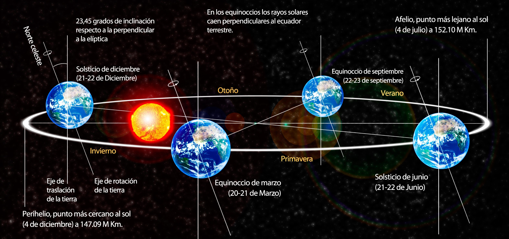

Comencemos a movernos!!!
La tierra no esta inmóvil en el espacio, al igual que el resto de los planetas, presenta dos movimientos que son la rotación y la traslación. Estos ejercen una fuerte influencia sobre ella y son responsables de originar cambios entre el día y la noche, al igual que la llegada d elas estaciones

ROTACIÓN
Es el movimiento que realiza el planeta Tierra sobre su mismo eje y requiere de 24 horas para realizar un giro completo. En este movimiento una parte del planeta está iluminado por estar frente al Sol y la otra parte se encuentra oscura. Es el responsable entre el día y la noche.
Es el movimiento que realiza el planeta Tierra sobre su mismo eje y requiere de 24 horas para realizar un giro completo. En este movimiento una parte del planeta está iluminado por estar frente al Sol y la otra parte se encuentra oscura. Es el responsable entre el día y la noche.
TRASLACIÓN
De manera simultánea, el planeta gira sobre su mismo eje y realiza un movimiento alrededor del Sol que se conoce como traslación. En este movimiento la Tierra demora 365 días y 6 horas aproximadamente en dar una vuelta completa alrededor del astro. La duración de las estaciones y el transcurso de tiempo entre el día y la noche es consecuencia de la traslación de la Tierra, debido al cambio de posición con respecto al Sol.
De manera simultánea, el planeta gira sobre su mismo eje y realiza un movimiento alrededor del Sol que se conoce como traslación. En este movimiento la Tierra demora 365 días y 6 horas aproximadamente en dar una vuelta completa alrededor del astro. La duración de las estaciones y el transcurso de tiempo entre el día y la noche es consecuencia de la traslación de la Tierra, debido al cambio de posición con respecto al Sol.
Vamos despacio! Que mas!!
Líneas Imaginarias
ECUADOR
El Ecuador es conocida como paralelo 0°, es una línea imaginaria que divide a la Tierra en dos partes llamadas hemisferios. El Hemisferio Norte y Hemisferio Sur
El Ecuador es conocida como paralelo 0°, es una línea imaginaria que divide a la Tierra en dos partes llamadas hemisferios. El Hemisferio Norte y Hemisferio Sur
TROPICOS
Además del Ecuador existen otras líneas imaginarias que se utilizan como referencia, como son los Trópicos. Ellos se clasifican en Trópico de Cancer y Trópico de Capricornio, el primero se encuentra en el hemisferio Norte y el segundo en el hemisferio Sur. La region tropical es la zona de la Tierra que se ubica entre ambos trópicos.
Además del Ecuador existen otras líneas imaginarias que se utilizan como referencia, como son los Trópicos. Ellos se clasifican en Trópico de Cancer y Trópico de Capricornio, el primero se encuentra en el hemisferio Norte y el segundo en el hemisferio Sur. La region tropical es la zona de la Tierra que se ubica entre ambos trópicos.
SOLSTICIO
La iluminación que llega a la Tierra proveniente del Sol es variable a lo largo del año debido al movimiento de traslación y a la inclinación de su eje. Un solsticio es el momento en el cual el Sol ilumina la superficie de la Tierra en uno de los trópicos y uno de los polos terrestres se encuentra más cerca del Sol y el otro mas alejado.
La iluminación que llega a la Tierra proveniente del Sol es variable a lo largo del año debido al movimiento de traslación y a la inclinación de su eje. Un solsticio es el momento en el cual el Sol ilumina la superficie de la Tierra en uno de los trópicos y uno de los polos terrestres se encuentra más cerca del Sol y el otro mas alejado.
EQUINOCIO
Es el momento en el cual el Sol se encuentra sobre el Ecuador. Al igual que los Solsticios, los equinocios ocurren dos veces al año y dan origen a las estaciones de primavera y otoño. En los equinocios los rayos solares caen perpendiculares al Ecuador Terrestre.
Es el momento en el cual el Sol se encuentra sobre el Ecuador. Al igual que los Solsticios, los equinocios ocurren dos veces al año y dan origen a las estaciones de primavera y otoño. En los equinocios los rayos solares caen perpendiculares al Ecuador Terrestre.
¿Que es el Afelio y el Perihelio?
La órbita terrestre alrededor del Sol es una elipse, la parte mas alejada a la que se encuentra la Tierra del Sol se llama Afelio y esta aproximadamente a 152 millones de Km, pasando por este punto a principios de Julio. El punto mas cercano al Sol en la órbita se llama Perihelio y se encuentra a 147 millones de Km, pasando por este punto a principio del mes de Enero.
¿Sabías?
Las estaciones no ocurren por el Perihelio ni por el Afelio, sino por la inclinación del eje terrestre. Esto explica por qué es invierno en el hemisferio norte durante el perihelio.